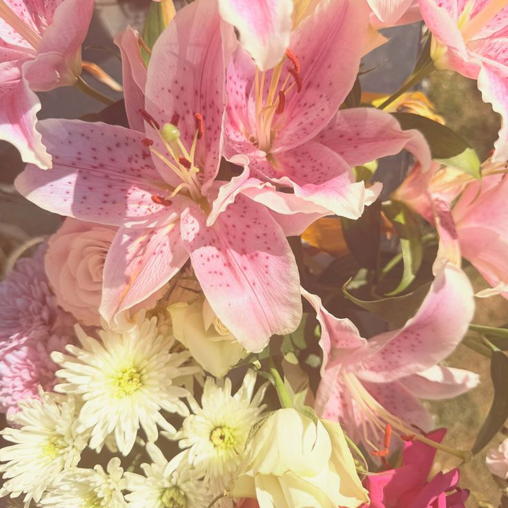

ABOUT ME! - CTM

Interests and hobbies: I play softball, I love embroidering, I love getting to do art-involved activities, I love music, I love romance movies, and I love traveling.
The purpose of my portfolio is to show all my work and how I've been able to grow through all the projects and assignments I've done in this class, and how much knowledge I've been able to learn about computer science.
I have grown my CS knowledge and skills by being able to code after not even knowing what it was. I'm glad I was able to learn something completely different and something so different compared to other school subjects.
I was able to learn how to create animations, games, and websites all in one year because of this class, and being able to do all of those things is something I always saw as very challenging until I was able to actually learn how to do it myself.